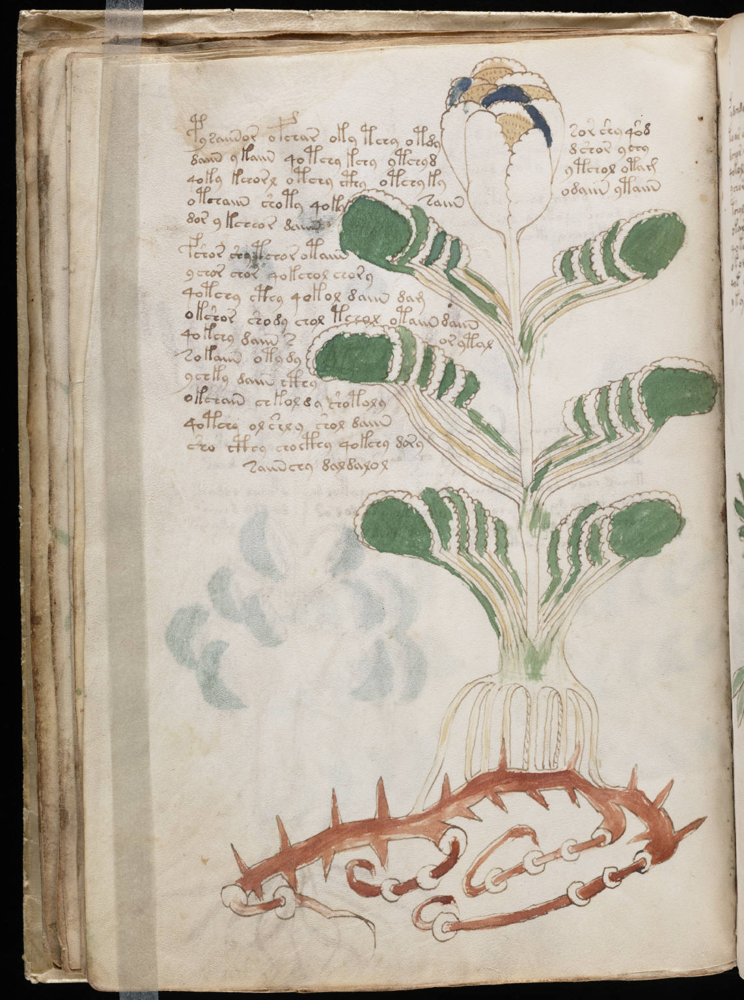

f22v
1pysaiinor ofchar oky tchy otdysor shy qod2daiin ykaiin qotchy kchy ytchyddshor ychy3qoky kchorl otchy cthy otchykyytchol otam4otchaiin shoty qokysaiinodaiin ytaiin5dor ykcheor daiin6fshor shy tchor otaiin7ychor chor qokchol chory8qotchy cthy qokol daiin dam9okshor shody chol teeol otaiin daiin10qokchy daiin sor ytal11sokaiin oty dy12ychky daiin cthy13okchain chkoldy shotoly14qotchy olshly shol daiin15sho cthy chocthy qokchy dory16saiinchy daldalol
